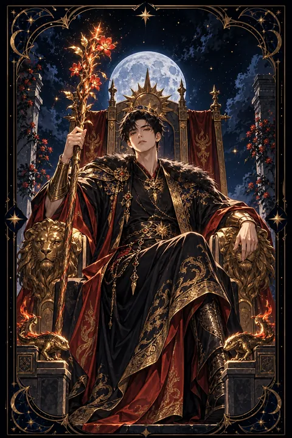

완드 왕 카드 — 큰 그림을 그리는 지도자의 불
완드 왕 카드 한눈에 보기
완드 왕 카드 상징 읽기

동네보살의 카드 그림은 전통 라이더–웨이트 덱의 뜻을 새 그림으로 옮긴 것입니다. 아래 상징 설명은 전통 덱의 그림을 기준으로 합니다.
완드 왕은 사자와 도롱뇽이 새겨진 왕좌에 앉아 싹이 돋은 지팡이를 쥐고 먼 곳을 응시합니다. 사자는 용맹과 권위를, 도롱뇽은 불 속에서도 꺾이지 않는 생명력과 열정을 상징합니다.
왕좌와 망토에 그려진 도롱뇽은 제 꼬리를 입에 문 고리 모양입니다. 이는 끝없이 이어지는 순환과 완성을 뜻하며 시작한 일을 끝까지 책임지고 마무리하는 성숙한 지도자의 모습을 나타냅니다. 발치에 따로 그려진 작은 도롱뇽은 새로운 아이디어가 늘 곁에서 움트고 있음을 보여 줍니다.
불꽃 모양의 왕관은 머릿속에 타오르는 비전을, 몸을 살짝 앞으로 기울인 자세는 언제든 행동에 나설 준비가 되어 있음을 드러냅니다. 먼 곳을 향한 시선은 눈앞의 이익보다 큰 그림을 보는 안목을 말해 줍니다. 왕좌 뒤로 펼쳐진 사자 무늬 휘장은 그가 쌓아 온 권위와 흔들리지 않는 자신감을 한 번 더 강조합니다.
완드 왕 카드 정방향 뜻
정방향 완드 왕은 비전과 결단력을 갖춘 지도자의 에너지를 보여 줍니다. 멀리 내다보는 안목으로 방향을 정하고 사람들을 이끌어 목표를 현실로 옮기는 힘이 강해지는 시기입니다.
이 카드는 기업가 정신과 주도성을 상징합니다. 새로운 사업을 구상하거나 팀을 이끌어야 하는 자리에 있다면 자신의 판단을 믿고 앞장서도 좋습니다. 분명한 목표를 제시할수록 주변 사람들이 신뢰하고 따릅니다.
완드 왕의 힘은 추진력만이 아니라 끝까지 책임지는 태도에서 나옵니다. 꼬리를 문 도롱뇽처럼 시작한 일을 마무리하는 모습이 진정한 위엄을 만듭니다. 큰 그림을 단계별 계획으로 나누고 사람들과 공유하면 목표에 닿는 속도가 빨라집니다. 결정을 내리기 전 가까운 조언자의 의견을 한 번 들어 두면 판단이 더욱 단단해집니다.
완드 왕 카드 역방향 뜻
역방향 완드 왕은 지도자의 힘이 지나치거나 방향을 잃은 상태를 나타냅니다. 자신의 판단만 옳다고 믿고 다른 사람의 의견을 무시하거나 성급하게 결정을 밀어붙이는 모습으로 드러날 수 있습니다.
자신과 타인에게 지나치게 높은 기대를 걸어 작은 실수에도 크게 실망하거나 화를 내는 일이 잦아지기도 합니다. 반대로 말과 계획은 거창한데 실행이 따르지 않아 신뢰를 잃는 경우도 있습니다.
이 카드는 힘을 버리라는 뜻이 아니라 다스리라는 조언입니다. 지시하기 전에 먼저 묻고 결정을 하루쯤 미뤄 감정이 가라앉은 뒤 내리세요. 목표를 현실적인 수준으로 조정하면 주변 사람들의 부담이 줄고 협력도 살아납니다. 따르는 사람의 속도에 맞춰 걸을 때 리더의 자리는 더 단단해집니다.
연애에서 완드 왕 카드
솔로라면 믿음직하고 주도적인 모습에 사람들이 끌리는 시기입니다. 자신의 삶을 분명하게 이끌어 가는 태도에 호감을 느끼는 사람이 나타나기 쉽습니다. 관심 가는 사람에게는 망설이지 말고 먼저 만남을 제안해 보세요.
연인과 함께라면 관계의 앞날을 구체적으로 그려 보기에 알맞은 시기입니다. 함께 살 곳이나 앞으로의 목표처럼 두 사람의 큰 그림을 이야기하면 신뢰가 깊어집니다. 든든하게 상대를 지지해 주는 태도가 관계를 안정시킵니다.
다만 모든 결정을 혼자 내리거나 상대에게 자신의 기준을 요구하면 상대가 답답함을 느낄 수 있습니다. 이끄는 것과 통제하는 것의 차이를 기억하고 작은 선택은 상대에게 맡겨 보세요. 존중받는다고 느낄 때 상대의 마음도 더 활짝 열립니다. 든든함과 부드러움을 함께 보여 줄 때 이 카드의 사랑이 가장 빛납니다.
재회·속마음 질문에서 완드 왕 카드
완드 왕이 재회 질문에 나오면 관계를 다시 이끌 주도권이 당신에게 있다는 뜻으로 읽힙니다. 확신이 있다면 분명한 태도로 먼저 연락해 보세요. 다만 과거의 갈등이 한쪽의 고집이나 통제에서 비롯되었다면 같은 방식으로 다가가서는 결과가 달라지지 않습니다. 상대의 이야기를 충분히 듣고 이번에는 무엇을 함께 바꿀지 구체적으로 제안하는 것이 바람직합니다. 과거의 잘잘못을 가리기보다 앞으로의 모습을 보여 주는 쪽이 설득력이 큽니다. 왕이 뒤집혀 있다면 자존심 싸움이 다시 벌어질 수 있으니 누가 옳은지 겨루려는 욕심부터 접어 두세요. 달라진 태도를 말보다 행동으로 먼저 보여 주면 상대도 경계를 풀 것입니다.
일·금전에서 완드 왕 카드
일에서는 리더 역할을 맡거나 중요한 결정을 내리는 자리에 서기 쉬운 시기입니다. 팀을 이끌고 방향을 제시하는 능력이 인정받으며 창업이나 새로운 사업 구상에도 힘이 실립니다. 큰 목표를 단계별로 나눠 공유하면 구성원들의 협력을 끌어낼 수 있습니다.
재정 계획 쪽으로는 장기적인 안목으로 계획을 세우기 좋은 때입니다. 한 해의 목표를 정하고 그에 맞춰 수입과 지출을 조정해 보세요. 다만 체면이나 기분에 따라 큰돈을 쓰거나 무리한 약속을 하기 쉬우니 계획에 없는 지출은 하루쯤 묵혀 두고 다시 살피세요. 사람을 믿고 맡기는 결단이 조직 전체의 속도를 끌어올립니다. 권한을 나눌수록 리더의 무게는 오히려 가벼워집니다.
완드 왕 카드는 예일까 아니오일까
뚜렷한 비전과 결단력으로 일을 이끄는 카드이므로 주도적으로 나선다면 이룰 수 있다는 쪽으로 기웁니다. 왕이 뒤집혀 나오면 독단과 성급함이 걸림돌이 되므로 주변 의견을 듣고 계획을 다듬는다는 조건이 붙습니다.
자주 묻는 질문
완드 왕 카드 역방향은 나쁜 뜻인가요?
역방향 완드 왕은 지도자의 힘이 지나치거나 방향을 잃은 상태를 나타냅니다. 자신의 판단만 옳다고 믿고 다른 사람의 의견을 무시하거나 성급하게 결정을 밀어붙이는 모습으로 드러날 수 있습니다.
완드 왕 카드가 연애 질문에 나오면요?
솔로라면 믿음직하고 주도적인 모습에 사람들이 끌리는 시기입니다. 자신의 삶을 분명하게 이끌어 가는 태도에 호감을 느끼는 사람이 나타나기 쉽습니다. 관심 가는 사람에게는 망설이지 말고 먼저 만남을 제안해 보세요.
타로 카드는 어떻게 뽑나요?
타로 카드 페이지에서 78장을 섞으면 그중 22장이 펼쳐집니다. 마음이 가는 세 장을 고르면 과거·현재·미래 자리에 놓이고, 한 장씩 뒤집어 자리와 방향에 맞는 풀이를 읽습니다. 정방향과 역방향은 섞는 순간 정해집니다.